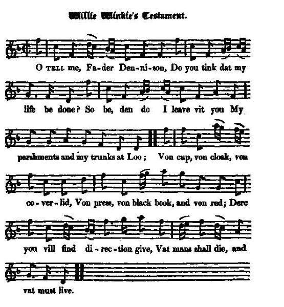

Willie Winkie's Testament
Le testament de Willie Winkie
King William's character

Tune - Melodie
"Willie Winkie's Testament"
from Hogg's "Jacobite Reliques" N°24
Sequenced by Christian Souchon

|
This tune is also known under lots of names: “Willie Winks”, “Willie Winkie”, "Cobbler's Hornpipe", "Connolly's Reel", “Craig’s Pipes", "The Edenderry Reel", "The Fiddler is Drunk", "The Foxhunters Reel", “Greg’s Pipe Tune", “Gregg’s Pipes", “Gun Do Dhuit Am Bodach Fodar Dhomh” (The Old Man Wouldn’t Give Me Straw), "The Kerry Huntsman", "Kregg's Pipes," “The Limber Elbow", “The Manchester", "Píopaí Greig", "Willy Wilky"... It is popular in Scotland (Strathspey) and in England (Northumberland) where it is set as a hornpipe.
A version of the melody appears in the 1770 music manuscript collection of Northumbrian musician William Vickers under the title “Willy Wilky, or, Cobbler’s Hornpipe"; in Bremner's "Scots Reels", c. 1757; pg. 61; in Gow's "Complete Repository", Part 2, 1802; pg. 29... Source "The Fiddler's Companion" (cf. Liens). |
Ce chant est également connu sous une infinité d'autres titres: “Willie Winks”, “Willie Winkie”, "Cobbler's Hornpipe", "Connolly's Reel", “Craig’s Pipes", "The Edenderry Reel", "The Fiddler is Drunk", "The Foxhunters Reel", “Greg’s Pipe Tune", “Gregg’s Pipes", “Gun Do Dhuit Am Bodach Fodar Dhomh” (The Old Man Wouldn’t Give Me Straw), "The Kerry Huntsman", "Kregg's Pipes," “The Limber Elbow", “The Manchester", "Píopaí Greig", "Willy Wilky"...Il est populaire tant en Ecosse (Strathspey) qu'en Angleterre (Northumberland) où on le joue sous forme de hornpipe. Une version de la mélodie est publiée en 1770 dans le recueil de manuscrits du musicien de Northumberland, William Vickers sous le titre "Willy Wilky, or, Cobbler’s Hornpipe"; dans les "Scots Reels" de Bremner vers 1757 (page 61) et dans le "Complete Repository" de Gow ,2ème partie, page 29, en 1802...
Source "The Fiddler's Companion" (cf. liens). |

|
WILLIE WINKIE'S TESTAMENT. [1}
1. O Tell me, Fader Dennison, [2] Do you tink dat my life be done ? So be, den do I leave vit you My parshments and my trunks at Loo; Von cup, von cloak, von coverlid, Von press, von black book, and von red; Dere you vill find direction give, Vat mans shall die, and vat must live. 2. Dere you vill find it in my vill, Vat kings must keep deir kingdoms still, And, if dey please, who dem must quit; Mine good vench Anne must look to it. Voe's me, dat I did ever sat On trone!—But now no more of dat. Take you, moreover, Dennison, De cursed horse dat broke dis bone. [3] 3. Take you, beside, dis ragged coat, And all de curses of de Scot, Dat dey did give me vender veil, For Darien and dat McDonell. [4] Dese are de tings I fain void give, Now dat I have not time to live: 0 take dem off mine hands, I pray! I'll go de lighter on my vay. 4. I leave unto dat poor vench Anne, Von cap void better fit von man, And vit it all de firebrands red, Dat in dat cap have scorch'd mine head. All dis I hereby do bequeath, Before I shake de hand vit death. It is de ting could not do good, It came vit much ingratitude. 5. And tell her, Dennison, vrom me, To lock it by most carefully, And keep de Scot beyond de Tweed, Else I shall see dem ven I'm dead. I have von hope, I have but von, 'Tis veak, but better vit dan none; Me viss it prove not von intrigue— De prayer of de telfish Whig. [5] Source: Jacobite Minstrelsy, published in Glasgow by R. Griffin & Cie and Robert Malcolm, printer in 1828. |
LE TESTAMENT DE WILLIE WINKIE [1]
1. Dites-moi, Père Tennisson, [2] Vais-je mourir? Est-ce la fin? Dans ce cas je vous laisse à Londres Mes malles et mes parchemins. Les tables, les manteaux et les couvercles, Placards, livres rouges et noirs, Vous y trouverez à qui je souhaite Donner la mort, donner l'espoir. 2. Dans mon testament j'aménage L'Europe en gardant certains rois. D'autres devront plier bagages, Notre bonne Anne y veillera. Fallait-il que je monte sur ce trône? Bah, tout cela c'est du passé! Prenez pour vous, cher Père Tennisson, Ce maudit cheval qui m'a tué! [3] 3. Prenez ma vieille redingote Ainsi que les malédictions Dont tous m'accablent en Ecosse Suite à Darien et à Glencoe. [4] Autant de biens dont je me débarrasse Volontiers avant de mourir. Oh, prenez-les, faites-moi cette grâce: Le cœur léger je veux partir. 4. Et je lègue à cette pauvre Anne Ce couvre-chef bien masculin Et les incendies et les flammes Dont je sais qu'il protège bien. Je ne suis pas ingrat, je les lui lègue, Avant d'aller trouver la mort. Ce ne serait pas bon pour mes affaires D'ajouter encore à mes torts. 5. Et dites-lui bien qu'elle enferme Les Ecossais à double tour, La Tweed demeure leur frontière: Même morts, je les crains toujours. J'ai bon espoir, moi le Whig égoïste -L'espoir vaut mieux que rien du tout- De protéger de toutes les intrigues Ce pays, c'est mon rêve fou! [5] (Trad. Christian Souchon(c)2009) |
|
[1] According to a note by Hogg in his "Jacobite Relics", this song "is a
parody of an older song of the same name
that describes the effects of a poor wretched countryman. It was a favourite mode of writing in those days, many such testaments being still extant that were written about that time.
Though there is an attempt at making it broken Dutch , it is no more than "Aberdeen Dutch"." [2] Dennison : This is a misnomer, and alludes to Dr Thomas Tennison, Archbishop of Canterbury, a celebrated polemic writer against popery, who attended King William during his last illness. [3] King William's death was occasioned by his horse stumbling on a mole hillock. ' The little gentleman in black velvet," was afterwards a favourite toast with the Jacobites of that day, in allusion to the mole which was the cause of his death. [4] 'Darien and McDonell, ' mentioned in the third verse, evidently alludes to the Scots settlement at Darien, and the massacre of the McDonalds at Glencoe which are here made to hang heavy on the mind of William. [5] A pertinent remark made by Hogg: The character of King William drawn by a Scottish historian coincides very well with the sketch given in the song: "...William was a fatalist in religion, indefatigable in war, enterprising in politics, dead to all the warm and generous emotions of the human heart; a cold relation, an indifferent husband, a disagreeable man, an ungracious prince, and an imperious sovereign." |
[1] Selon une note de Hogg dans ses "Reliques Jacobites", ce chant est la
parodie d'un chant plus ancien portant le même nom
, qui décrit le patrimoine d'un paysan misérable. Ces testaments constituaient un genre en vogue à cette époque et il nous reste un certain nombre de pièces de la même veine.
Bien que l'auteur affecte d'écrire en pseudo-néerlandais , il s'agit bien plutôt de "néerlandais d'Aberdeen". [2] Dennison : C'est un nom déformé qui vise le Dr Thomas Tennison, archevêque réformé de Cantorbéry, célèbre polémiste antipapiste, qui assista le roi Guillaume dans les derniers jours de son agonie. [3] La mort de Guillaume avait été occasionnée par la chute de son cheval sur une taupinière. "Au petit gentilhomme en velours noir" devint dès lors un des toasts favoris des Jacobites, faisant allusion à la taupe qui avait causé sa mort. [4] 'Darien et Glencoe ', dans la troisième strophe font allusion aux établissement écossais de Darien et au massacre du clan McDonald de Glencoe dont il est dit ici qu'ils pesaient lourdement dur la conscience de Guillaume. [5] Voici une remarque pertinente de Hogg: Le caractère du roi Guillaume tel qu'il est décrit par un historien écossais coïncide tout à fait avec l'esquisse qui en est faite dans ce chant. "...Guillaume était un fataliste en matière de religion, un homme de guerre infatigable, un homme politique entreprenant, imperméable à la chaleur et aux émotions généreuses qui affectent le cœur des hommes. Il fut un parent distant, un époux indifférent, un homme désagréable, un prince sans pitié, un souverain autoritaire." |
|
|
|